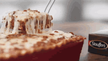

Lasagna
How to prepare Lasagna
A mouthwatering and traditional Italian dish composed of layers of pasta, sauce, and cheese. Perfect for feeding a large group or a cozy night in.
Components
- 1 lb. of lasagna noodles.
-1 lb. of ground beef
- 1 onion, chopped
- 3 cloves garlic, minced
- 28 ounces canned crushed tomatoes
- 2 tablespoons tomato paste
- 1 teaspoon dried basil
- 1 teaspoon dried oregano
- 1/2 teaspoon salt
- 1/4 teaspoon black pepper
- 15 ounces ricotta cheese
- 1 egg
- 3 cups grated mozzarella cheese
- 1/4 cup grated Parmesan cheese
- Preheat oven to 375°F (190°C).
- Cook lasagna noodles according to package instructions until al dente. Drain and set aside.
- In a large skillet, cook ground beef, onion, and garlic over medium heat until beef is browned.
- Add the tomato paste, basil, oregano, salt, and pepper along with the smashed tomatoes. Boil for a moment, then turn down the heat and simmer for ten minutes.
- Ricotta cheese and egg should be combined in a different bowl.
- Using a 9 x 13 baking dish, thinly layer beef sauce on the bottom.
- Three cooked lasagna noodles are layered on top of the ricotta mixture.
- Repeat the process of piling the meat sauce on top after using all of the noodles, sauce, and ricotta mixture.
- On top, grate some mozzarella and parmesan cheese.
- Bake the dish for 25 minutes with the foil covering.
- Once the foil is removed, bake the dish for a further 25 minutes, or until the cheese is melted and bubbling.
- Before serving, let sit for ten minutes to cool. Enjoy!